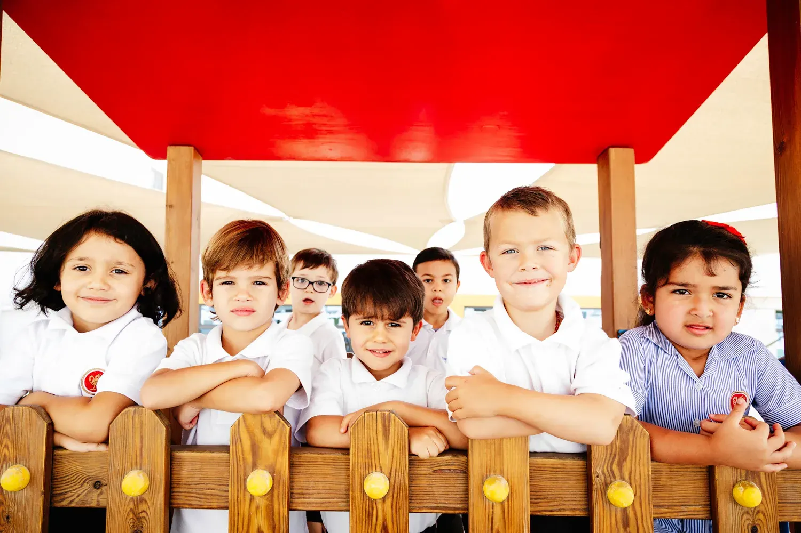
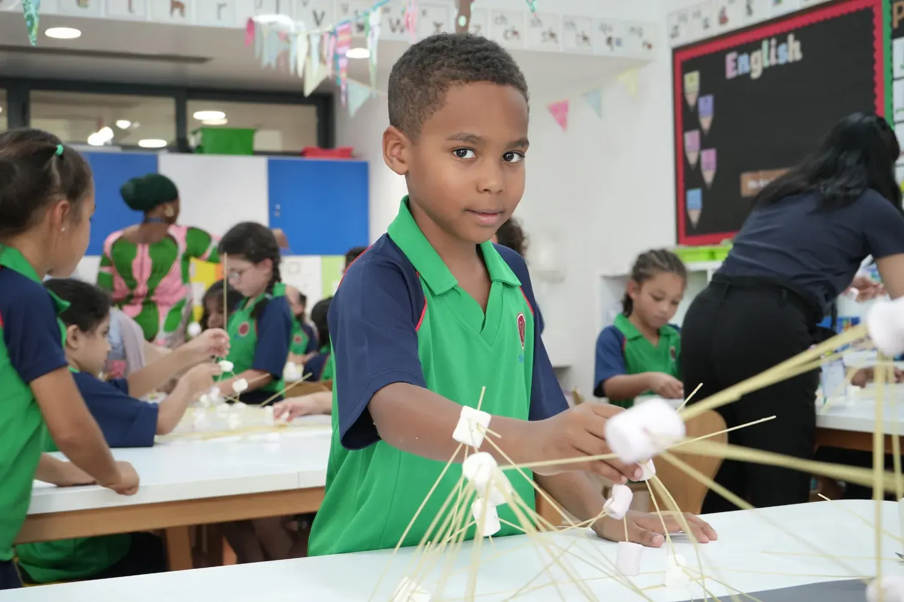
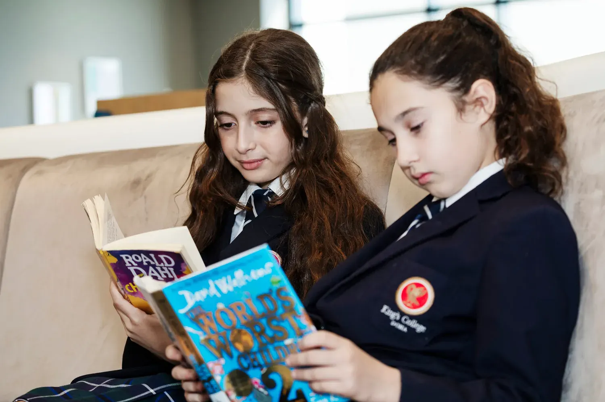

- Home
- British Curriculum
British Curriculum
A Distinctive British Education for a Global Future
At King’s College Doha, we proudly provide an Outstanding British education that actively inspires curiosity, creativity, and confidence. Rooted in the academic excellence of our partner school, King’s College UK, our curriculum successfully combines the rigour of the English National Curriculum (ENC) with the warmth and personalized care that define a King’s education.
Students follow a seamless, continuous learning journey designed to provide stretch and support at every stage. Specialist teaching, small class sizes, and personalized pathways ensure every child is fully known, highly valued, and constantly encouraged to achieve their very best.
Our curriculum celebrates both British educational excellence and the cultural richness of Qatar. Arabic Language, Islamic Studies, and Qatari History are central to our programme, helping our students grow with a strong sense of identity, heritage, and global perspective.
At King’s, our mission is not just to prepare students for examinations; we prepare them for a lifetime of success.
Jump down to:
- Early Years
- Pre-Prep
- Prep School
- Senior School
- Sixth Form
Early Years: Pre-School and Reception (Ages 3 to 5)
The Adventure Begins
Education at King’s starts with wonder. As an Early Years student at our Al Thumama Campus, your child embarks on the biggest and most important adventure of their life. This campus is uniquely designed exclusively for our youngest learners, providing a light, modern, and inspiring environment that perfectly balances high aspirations with essential warmth, kindness, and praise.
The Early Years phase is designed to make learning experiences irresistible. Small class sizes and talented, British-trained teachers ensure that each child is known incredibly well. We tailor every experience to suit their individual learning style, supported by a full-time Teaching Assistant in every class. Learning continues beyond the classroom, with excellent opportunities to use our bespoke outdoor learning areas and shared learning spaces.

Pre-Prep: Years 1 and 2 (Ages 5 to 7)
Building Strong Foundations
Years 1 and 2 seamlessly build upon the wonderful learning experienced in the Early Years. Our rigorous curriculum is rooted in the English National Curriculum, enriched with the standards of our sister school, King’s College UK, to provide added stretch for every individual child.
Literacy and numeracy have the highest priority to ensure a sound foundation, but great emphasis is also placed on the emotional development of each student. In addition to English, Mathematics, and Science, your child will enjoy subjects delivered by specialist teachers, including Arabic, Music, Physical Education, and Swimming. We also offer the widest possible range of Co-Curricular Activities, including our unique Desert School, enabling students to excel both within and beyond the classroom.

Prep School: Years 3 to 8 (Ages 7 to 13)
Expanding Horizons
As students move into the Prep years at our Mesaimeer Campus, their sense of curiosity and courage grows. Uniquely to Doha, all subjects are led by specialist teachers from Year 5 upwards, ensuring children are challenged daily by teachers who are experts in their discipline.
We value the individual above all else. This phase focuses on combining strong academic foundations with essential character development and leadership. Students enjoy an extended school day allowing time for a vibrant programme of co-curricular activities and Elective sessions, where they explore new interests, take on responsibilities, and develop resilience. The Prep School allows students to enjoy the fun of childhood in a self-contained, pupil-centred environment right up until their early teenage years.

Senior School: Years 9 to 11 (Ages 13 to 16)
Celebrating Aspiration and Individuality
In the Senior School, we focus on celebrating individual aspiration while maintaining high academic expectations appropriate for each student. We seek to develop young people who are confident, committed, creative, caring, and curious, with deep respect for both themselves and others.
Our balanced and holistic approach, inspired by our famous UK partner school, ensures that emotional and social development are valued equally alongside academic achievement. Our challenging and inspiring academic education culminates in IGCSE and GCSE examinations. We offer a broad and balanced choice of subjects, ensuring your child is fully nurtured and challenged, preparing them to make a positive difference in the world.

Sixth Form: Years 12 to 13 (Ages 16 to 18)
The Pinnacle of Academic Study and Future Preparation
We firmly believe that the Sixth Form years, hosted in its own dedicated, modern centre on the Mesaimeer Campus, should be the most engaging and fulfilling time of a student’s school life. This is the stage where students form firmer friendships, sharpen their focus on academic interests, and begin the transition into young adulthood.
In the Sixth Form, most students will take three A-levels—the golden standard of British education. This combination of rigour and specialism, taught by passionate specialist teachers, is the ideal preparation for global university entry and working life. Our comprehensive enrichment programme, including the Extended Project Qualification (EPQ), ensures that intellectual development extends beyond A-level grades. Furthermore, our unique The Edge programme equips students with the essential soft skills needed to thrive in today’s competitive world.

Start Your Child’s King’s College Journey
Unlock your child’s full potential with a world-class education. Join King’s College Doha and give your child the opportunity to flourish at one of Qatar’s leading British schools – rooted in heritage and alive with innovation.
Apply Now